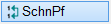")
")
Alternativer Aufruf: mittlere Maustaste auf ein Schnittpfeil-Element.
Zeigt die Schnittführung auf der Zeichnung.
Optionen |
Beschreibung |
|---|---|
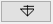 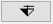 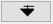 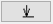 |
Darstellung eines Schnittpfeils: |
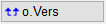 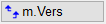 |
Auswahl des Versatzes: |
|
Stiftauswahl. Falls Stifte als Favoriten aktiviert wurden, werden diese an erster/oberster Stelle angezeigt. |
|
Übernimmt Symbol, Stiftnummer, Schriftart, Textgröße und Breitenfaktor des angeklickten Schnittpfeils. |
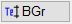 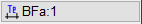 |
Individuelle Textgröße (wird auf Textgrößennummer 8 gespeichert) bzw. individuelle Textbreite. |
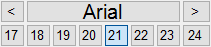 |
Auswahl des Schrifttyps. |
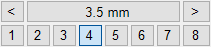 |
Auswahl der Textgröße. |


So wird's gemacht:
§Geben Sie den Winkel ein, unter dem der Schnittverlauf erfolgen soll. [Winkel].

|
||||||


§Geben Sie die Schnittbezeichnung ein. [Text].
Unter der Abfrage haben Sie die Möglichkeit, Sonderzeichen einzugeben.
§Bevor Sie einen Schnitt zeichnen, wählen Sie zunächst im Funktionsbereich, ob ohne Versatz oder mit Versatz geschnitten werden soll. [1. Punkt 1. Linie]; [2. Punkt].
Ohne Versatz. §Klicken Sie am Beginn der Schnittführung die linke Maustaste und bewegen Sie den Cursor bis zum Schnittende. Zeichnen Sie den Schnitt mit einem weiteren Linksklick. Während der Cursorbewegung wird eine Verbindungslinie zwischen dem Startpunkt und dem Cursor gezeichnet. Siehe Beispiel: Schnitt A - A. |
|
Mit Versatz. §Gehen Sie wie bei [o.Vers] beschrieben vor und zeichnen Sie nacheinander die Schnitte. ·Bestätigen Sie die Schnittführung mit Rechtsklick. Siehe Beispiel: Schnitt B - B. |
Die Schnittpfeile werden an den Cursor gehängt. Sie können die Schnittpfeile noch um den angegebenen Winkel spiegeln - Funktion [Klappe] unterhalb der Abfrage [Lage].
§Schieben Sie die Darstellung an die gewünschte Position und platzieren Sie diese mit Linksklick. [Lage].
Die Schnittführung wird platziert.
Beispiel:
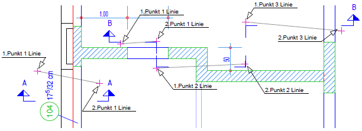 |
[o.Vers] = Schnitt A - A. [m. Vers] = Schnitt B - B. |
Siehe auch:
Zugehörige Referenzen: